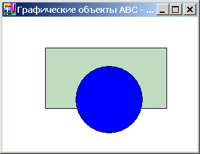
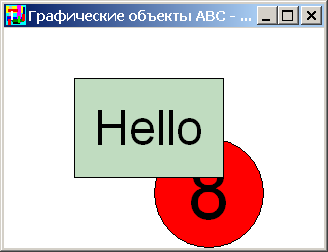

Основными типами графических объектов, определенными в модуле
ABCObjects, являются RectangleABC, SquareABC,
EllipseABC, CircleABC, TextABC, RegularPolygonABC,
StarABC, PictureABC, MultiPictureABC, BoardABC и ContainerABC.
Типы графических объектов представляют собой классы,
состоящие из методов и свойств, а также нуждающиеся в конструировании перед
первым использованием. Изменение свойств влияет на внешний вид и поведение
графических объектов. Например, при изменении свойств Width и Height меняются
размеры графического объекта, при изменении свойства
Color - цвет графического
объекта и т.д. Вызов методов
графического объекта возвращает или меняет его
характеристики. Например, при вызове метода ToFront
графический объект перемещается на передний план, а вызов метода Intersect(g)
возвращает, пересекается ли текущий объект с объектом g.
Все графические объекты являются разновидностями класса
ObjectABC, который содержит общие для всех
свойства и методы.
Создадим два перекрывающихся графических объекта:
uses ABCObjects,GraphABC;
var
r: RectangleABC;
c: CircleABC;
begin
r := new RectangleABC(70,50,200,100,clMoneyGreen);
c := new CircleABC(120,80,110,clBlue);
end.
После запуска программы увидим на экране следующее:

Поменяем некоторые свойства графических объектов и вызовем метод MoveOn для окружности, дописав в конец программы следующие строки:
r.Width := 150;
c.Color := clRed;
c.MoveOn(30,30);
После запуска программы:
Добавим в конец программы следующие строки:
c.Number := 8;
r.Text := 'Hello';
r.ToFront;
После запуска программы:
